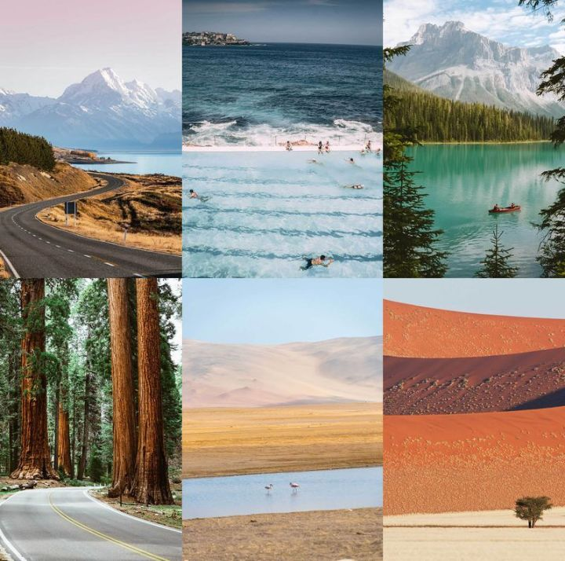
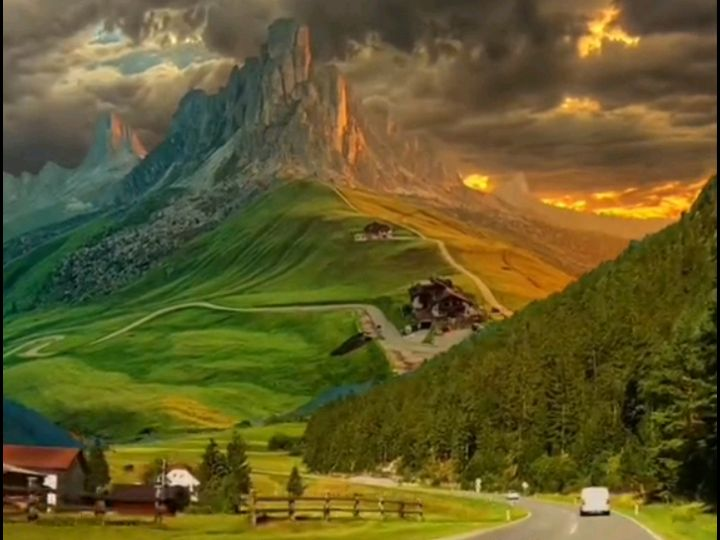
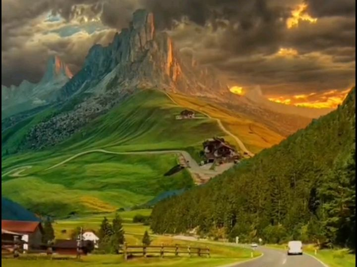

POPULAR DESTINATIONS.
WE VISIT VARIOUS PLACES ALL OVER THE WORLD AND SOME ARE OF WHICH NARE SHIOWN BELOW:
The great wall is pne of the most visited areas all over the world. this wall wat contructed many years ago and it goes more than five killometers long and it was contrusted in a single ridge running from a specific direction to the other.

@. Douro valley in portugal; with endless rows of lines tumbling down hillsides and birds of pary swooning along thew vines down hill.Areas with beatufil ventures that are eye catching that we visit and tour every now and then for enjoyme3nt, research, study, lisure, among other various reasons. Note: for any tourist to be taken to any bestinaions shown aboe it depends in his will and descission nomatter the country he of she comes from and where the site is located the badden os on us to fulfill our job of making him reach that place in peace and have enjoyment by. 
Some attractive and nice looking coastal features more especially along the coastlines of lake vioctoria and oceans like indian ocean.
Some of the attractive natural features are found in the areas of the world that experience hot summers such as Egypt, south sudan, among others. here many tourist always feel like staying thers because of the beatiful ventures the can never make theier eye fell tired of seeing them every day more especially during the morning hours when the sun is rising. Therefore as a result to solve the could be problem we descide to hove some two days if not a week in that area trying ng to enjhoy the place, and its beautiful ventures with some comp fires that is made light and provide wormth to us as it is well known that ares with hot temperatures during day are ever so cold during the night hours. And i want to assure you everything is just fun and enjoyment every. Actually we dont stop at the , for who every has found intrest in the area and would wish to have citizenship in the country we have visited, is helped by RANADE TOURS AND TRAVEL to get what every it taves to stay in the plce as a full citizen legall with fully signed papers and permission from the government.
TAP TO NEXT PAGE TO CONTINUE UP AT THE TOP


Here are 20 of the most beautiful tourist attractions around the world, along with their locations and a brief description:
1.*The Great Wall of China*(China):-
A series of fortifications built to protect the borders of China, the Great Wall is a UNESCO World Heritage Site and one of the most iconic landmark sin the world.
2.*Taj Mahal*(Agra, India):-
A stunning white marble mausoleum built by Mughal Emperor Shah Jahan in memory of his wife, the Taj Mahal is a symbol of love and beauty.
3.*Eiffel Tower*(Paris, France):-
An iconic iron lattice tower built for the 1889 World's Fair, the Eiffel Tower offers breath taking views of the City of Light.
4.*Pyramids of Giza* (Giza, Egypt):-
No trip to Egypt is complete without visiting the Pyramids of Giza, one of the Seven Wonders of the Ancient World.
5.*Grand Canyon* (Arizona, USA):-
One of the most spectacular natural wonders in the United States, the Grand Canyon is a breathtaking example of erosion and geological history.
6.*Great Barrier Reef* (Queens land, Australia):-
The world's largest coral reef system, the Great Barrier Reef is home to an incredible array of marine life and offer some of the best snorkeling and diving in the world.
7.*Colosseum*(Rome, Italy):-
This ancient amphitheater is one of Rome's most iconic land marks and a testament to the engineering and architectural skills of the ancient Romans.
8.*Golden Gate Bridge* (San Francisco, California, USA):-
Aniconic suspension bridge with stunning views of the San Francisco Bay and the city sky line, the Golden Gate Bridge is a must- visit attraction.
9.*Chichen Itza* (Yucatan, Mexico):-
This ancient May an city is home to the Pyramid of Kukulkan, as tunning example of May an architecture and astronomy.
10.*Sydney Opera House* (Sydney, Australia):-
One of the most iconic buildings in the world, the Sydney Opera House is a master piece of modern architecture and a popular venue for performing arts.
11.*Mount Fuji* (Japan):-
An iconic stratovolcano and Japan's highest peak, Mount Fuji is a popular destination for hiking and offers breath taking views.
12.*Acropolis of Athens* (Athens, Greece):-
A citadel located on a high rocky out crop in the heart of Athens, the Acropolis is home to the Parthenon and other ancient ruins.
13.*Angkor Wat* (Siem Reap, Cambodia):-
Avast temple complex built in the 12th century, Angkor Wat is a testament to the art and architecture of the Khmer Empire.
14.*Niagara Falls* (Ontario/ New York, Canada/ USA):-
A breath taking water fall on the border of Canada and the United States, Niagara Falls is a popular destination for honey mooners and families.
15.*The Louvre* (Paris, France):-
One of the world's largest and most famous museums, the Louvre is home to an incredible collection of art and artifacts, including the Mona Lisa.
16.*The Great Rift Valley* (Africa):-
A geographic and geological feature that runs from Lebanon to Mozambique, the Great Rift Valley is home to some of Africa's most spectacular landscapes and wild life.
17.*The Swiss Alps* (Switzerland):-
A popular destination for skiing, hiking, and mountaineering, the Swiss Alps offer breath taking scenery and pictures que villages.
18.*The Amalfi Coast* (Italy):-
A stunning coast line in southern Italy known for its picturesque towns, crystal- clear waters, and stunning scenery.
19.*The Maldives*(Indian Ocean):-
A tropical paradise famous for its luxurious resorts and crystal- clear waters, the Maldives is a popular destination for honey mooners and beach lovers.
<20.*The Aurora Borealis* (Arctic/ Norway):-
Also known as the Northern Lights, the Aurora Borealis is a breathtaking natural phenomenon that can be seen in the Arctic regions.
These are just a few examples of the many incredible tourist attractions around the world. Each one offers a unique experience and breathtaking scenery.
NOTE: All places in higland area are most appropriete to be visited during the summer seasons. This helps to reduces on the chances of being affected by abrupt risks such as land slides and glatieted regons or area prone to snow are most likely to be visited during the wet season or winter season. This is advantagious for activities such as ice sckating among other activities curried out in glatieted areas. Therefore when you deal with ranade tours and travel you are at the right track. Meaning you are at low risk of being affected by minner minner risks. Trust us for the betterness of your everything in terms of Tour and travel is concerned. Lets explore the beauty of Nature Together and enjoy and as well say bye to stress issues.

 
